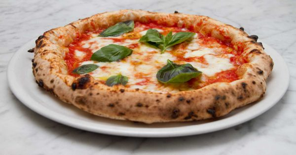

Pizza Margherita Recipe
More Recipe

Image: Pizza Margherita
It is roundish in shape with a raised edge (the cornicione) and seasoned with hand-crushed peeled tomatoes, mozzarella (buffalo mozzarella
or fior di latte), fresh basil leaves, and extra virgin olive oil. The dough is made by mixing water, salt, and yeast (either sourdough,
or fresh or dry baker's yeast) with flour (00 or 0). The dough is stretched by the pizzaiolo ('pizza maker') in a motion going outwards from the center, pressing with the fingers of both hands on the
dough ball, and flipping it several times, shaping it into a disc.It is then topped and baked in an oven, which is traditionally made of brick and
wood-fired (electric or gas ovens are also used).Pizza Margherita is usually served hot on a plate or folded into four and wrapped in paper (pizza a portafoglio or a libretto)
The origins of pizza Margherita came from mixing similar toppings that were already present in Naples between 1796 and 1810. In 1849 Emanuele Rocco recorded different pizza toppings including basil,
tomatoes, and thin slices of mozzarella; the mozzarella was thinly sliced, and added to the toppings already present. A popular legend holds that the archetypal pizza Margherita was invented in June 1889, when the Royal Palace
of Capodimonte commissioned the Neapolitan pizzaiolo Raffaele Esposito to create a pizza in honor of the visiting Queen Margherita. Of the three different pizzas he created, the queen strongly preferred a pizza swathed in the colors of the Italian flag—red (tomato),
white (mozzarella), and green (basil).Supposedly, this type of pizza was then named after the queen, with an official letter of recognition from the queen's "head of service" remaining to this day on display in Esposito's shop, now called the Pizzeria Brandi.
Pizza Margherita Ingredients
For the pizza dough (makes 2 pizzas):
- 3 1/2 cups all-purpose flour
- 1 tsp salt
- 1 tsp sugar
- 1 packet (7g) active dry yeast
- 1 1/4 cups warm water (about 110°F or 43°C)
- 2 tbsp olive oil
For the topping:
- 1 cup (about 250g) tomato sauce (preferably a simple, strained tomato sauce)
- 2 cups (200g) fresh mozzarella cheese, sliced or torn into pieces
- Fresh basil leaves (about 12-15 leaves)
- 2 tbsp extra virgin olive oil
- Salt, to taste
- Freshly ground black pepper, to taste
Make the pizza dough:
- In a bowl, mix the warm water, sugar, and yeast. Stir and let sit for 5-10 minutes until the mixture becomes frothy.
- In a large mixing bowl, combine the flour and salt. Create a well in the center and pour in the yeast mixture and olive oil.
- Stir with a spoon until a dough begins to form, then knead the dough on a floured surface for about 8-10 minutes until smooth and elastic.
You can also use a stand mixer with a dough hook for this step.
- Once the dough is smooth, place it in a lightly oiled bowl and cover with a damp cloth or plastic wrap. Let it rise in a warm spot for 1-2 hours or until it has doubled in size.
Prepare the pizza:
- Preheat your oven to 475°F (245°C). If you're using a pizza stone, place it in the oven to preheat as well.
- Punch down the dough and divide it into two equal portions (for two pizzas). Roll each portion into a ball and let them rest for 10 minutes to relax the dough.
- On a lightly floured surface, roll out each ball of dough into a circle (about 10-12 inches in diameter), keeping the edges slightly thicker for the crust.
- Transfer the dough to a baking sheet or a preheated pizza stone.
Assemble the pizza:
- Spread a thin layer of tomato sauce over the dough, leaving about a 1-inch border around the edges for the crust.
- Evenly distribute the mozzarella cheese over the sauce.
- Drizzle a little olive oil over the top and sprinkle with a pinch of salt and freshly ground black pepper.
Bake the pizza:
- Bake in the preheated oven for 10-15 minutes, or until the crust is golden and crispy, and the cheese is melted and bubbling.
- If you're using a pizza stone, you might need a slightly shorter cooking time.
Finish and serve:
- Once out of the oven, scatter fresh basil leaves over the hot pizza.
- Slice and serve immediately with an extra drizzle of olive oil, if desired.
Enjoy your delicious Pizza Margherita!